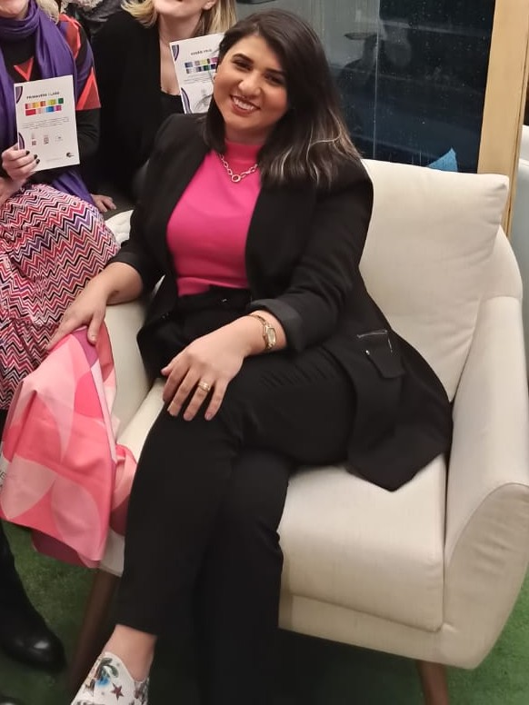

Que tal nos conhecermos?
Agende uma conversa gratuita de 30 minutos — sem compromisso.
 Falar
com a Jéssica →
Falar
com a Jéssica →
Ajudo mulheres a se reconhecerem no próprio reflexo — e a usarem a imagem como ferramenta de autoconfiança, presença e autenticidade.

Cresci em uma família onde moda e cuidado com a aparência faziam parte do cotidiano — mas foi só na vida adulta que entendi o real poder que a imagem tem sobre como nos sentimos e como somos percebidas.
Formada em Moda pela Universidade X e especializada em Consultoria de Imagem pelo Instituto Y, passei os primeiros anos da carreira trabalhando em grandes marcas do varejo gaúcho. Aprendi muito — mas sentia que queria algo mais próximo das pessoas, mais humano.
Em 2016, fundei a Jéssica Müllen Consultoria com uma missão clara: ajudar mulheres a se vestirem de si mesmas. Não de tendências. Não de expectativas alheias. De quem elas realmente são.
Desde então, já atendi mais de 400 mulheres em diferentes fases da vida — executivas, mães, empreendedoras, mulheres em transição de carreira — e cada uma me ensinou que a transformação pela imagem vai muito além do guarda-roupa.
Não existe estilo certo ou errado — existe o estilo que é seu. Meu trabalho é te ajudar a encontrá-lo, não a copiar o de outra pessoa.
Não faço consultoria de superfície. Quero entender quem você é de verdade — antes de falar sobre qualquer roupa.
Cada mulher chega com sua história, suas inseguranças e seu ritmo. Aqui não tem julgamento — tem escuta e cuidado.
O resultado não é uma roupa nova. É a confiança de entrar em qualquer ambiente e saber que está se comunicando exatamente como quer.
Cada formação que busquei foi motivada por uma necessidade real das mulheres que atendo. Aqui está o que sustenta tecnicamente o meu trabalho.
Universidade X · Porto Alegre, RS · 2013
Instituto Y · 2015 · Com ênfase em coloração pessoal e morfologia
Association of Image Consultants International · 2022
Instituto Z · 2018 · Método sazonal aplicado à realidade brasileira
Escola W · 2020 · Focado em lideranças e presença profissional
Curso de extensão · 2021 · Relação entre vestimenta, identidade e bem-estar
Quando uma mulher se olha no espelho e se reconhece — e gosta do que vê — algo muda. Na postura, na voz, na forma como ela ocupa os espaços. É isso que eu quero pra cada uma das minhas clientes.
Agende uma conversa gratuita de 30 minutos — sem compromisso.
Falar
com a Jéssica →